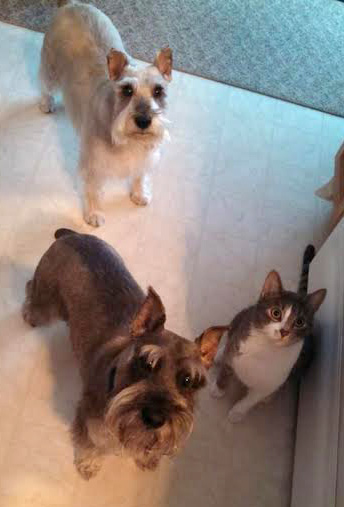

July 2015
Hi my name is Max. I’m the miniature schnauzer in the front sitting next to the cat. (We were all hoping some more chicken would fall while my mommy was cooking.) I was roaming in a big city, very sick, and was found by a friend of my mom’s daughter. My mom said she would keep me until she found a better place and five years later I’m still here because she fell in love with me and kept me. I have a great life with a doggie sister and a new kitty brother. I love to play with toys and my mommy laughs when I take my toys to the kitty, Willy, and try to get him to play with me. I love it when Pampered Pets comes to let us out and walk me. My mom broke her leg and Pampered Pets came and walked us for months until my mom could walk me again. They’re wonderful. My name is Abbie and I am the little lady of the house, standing in the back behind the two boys. My mom didn’t want Max to be lonely so she got me from a rescue place and I originally came from Ohio and Max and I are a pack now. I was most likely a puppy mill breeder and didn’t know anything about houses and was afraid of everyone. I had just had a litter and was spayed and it was all very scary. Pampered Pets came every day for a couple of weeks so I could start learning not to go in my crate. I am now a very happy, kind of shy dog who loves my mommy more than anything…well, treats are a close second. I love my walks and seeing all the neighbors who like to pet me. Life is good. Meow! I’m Willy and I’m the cat and therefore the most important animal in the house of course. I was lost and kept walking up and down the street trying to find a home. It was very, very cold last winter and I stood outside houses meowing to come in. My mommy took me in so I wouldn’t freeze. She named me Chilly Willy like the penguin cartoon character. We had a rough start but we worked it all out and now I’m a wonderful, loving cat who will let you pet me if it’s what I want at the time. I have a reputation to protect as a cat, after all. Max and I run and play a lot and we have special tag games. I never put my front claws out when I play with him because he’s my buddy. I just don’t know why he keeps trying to smell my tail…..it’s a dog thing I guess. |